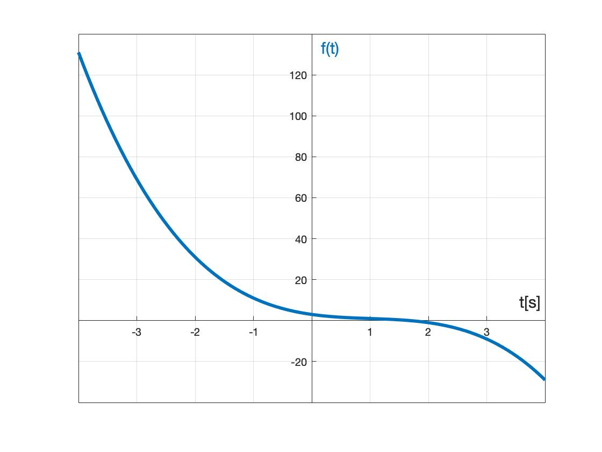

Data Science, AI, and ML in Systems Engineering
From Classical Control to Intelligent Systems
2026-02-10
Who am I?
My Journey
- Education: BS/MS in Mechatronics (Turkey), PhD in EE & MS in Math (UTD).
- Research Training: Postdoc at U. Naples (Italy) & MIT (USA).
- Professorate: Assistant & Associate Professor at Boise State University (2017-2025).
- Currently: Back home at UT Dallas as Associate Professor of Systems Engineering.


Classical vs. Intelligent Systems
Deterministic  Predictable. Static.
Stochastic  Adaptive. Learning.
Adaptive. Learning.
Why We Need AI

The Complexity Gap
- Data Volume: Terabytes/hour.
- Dimensionality: Systems with 1000+ variables.
- Human Limits: We cannot manually optimize these anymore.
Disentangling the Buzzwords

The Engineering View
Classical
\[ y = f(x) \] We know the physics (F=ma). We write the equation.
Machine Learning
\[ y \approx \hat{f}(x) \] We have the data points. The computer finds the curve.

The V-Model and AI

Operations: The Digital Twin

Physical Asset

Digital Replica
How AI Learns to Control

Reinforcement Learning
- Observe state.
- Take Action (Voltage).
- Get Reward (+1 if upright).
Sim2Real: The Reality Check
Simulation

Perfect Math
Reality

Noise & Friction
The Furuta Pendulum
- Goal: Balance upright.
- Actuator: Base Motor.
- Sensor: Encoders.

Integration: The Furuta Pendulum
Controller Architecture 
Performance (Pre-Move)
- Hardware: Assembled (Physical).
- Controller: Neural Network (Code).
- Current Status: Broken (Moved to Dallas).
- Video shows successful operation from Boise State lab.
The Black Box Problem
Classical Code
IF speed > 50 THEN brake (Traceable)
Neural Network
0.23 * x1 + 0.99 * x2 ... (Opaque)

The Ethics of AI

Summary

- Systems are changing: From static to dynamic.
- Tools: Python/MATLAB + Control Theory.
- Mindset: AI is just a subsystem. Integration is key.